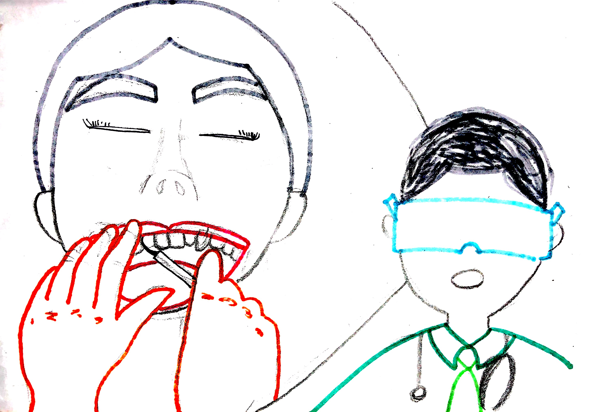

Virtual reality (VR) is an artificial environment that is created with software and presented to the user in such a way that the user suspends belief and accepts it as a real environment. VR can be used in fear therapy, education, games etc. The first VR experience was in 1962, the Sensorama. People could see, hear, smell and touch things. It was revolutionary for that time.
Augmented reality (AR) is a direct or indirect live view of a physical, real-world environment whose elements are "augmented" by computer-generated perceptual information. AR can be used in education, healthcare, art, martketing etc.
The augmented reality market is still far from equaling that of VR. The first AR experience was in 1968. Ivan Sutherland and Bob Sproull created a first head-mounted display, they called it The Sword of Damocles. It's about a helmet with two lenses at eye level. This helmet was linked to a computer thanks to a articulated arm. Obviously, it was a rough device that displayed primitive computer graphics.
1962: Sensorama1968: Sword of Damocles
My ideas
During the lecture several applications of virtual and augmented reality and virtual reality were shown.
I've selected 3 application areas, which are:
Art in/and museums
Sports on television
Education in healthcare
I thought of a VR or AR concept for
each application area and explained what
I want to achieve with it and how it works.
Art in/and museums
Wouldn't it be great if you can walk in a museum in your own room without having to go there and pay the entrance? By using your phone you can walk around a museum, and when you get closer (by walking) to a painting, you will find more information about it. You also see your own room on your phone, because it uses the camera.
AR Museum idea
Sports on television
I am always missing some extra information when I watch sports, e.g. from players, statics and other games that are playing at the same time. It should also be great if one of my social media accounts are projected next to the TV while watching a program on TV. By using sort of Google Glasses, you can see through Augmented Reality. Below you find some sketches about this.
AR glasses for TV
Education in healthcare
Practising is alway the best way to learn things in college, that's why I came up with this idea. By using your hands, an additional device (which can be used as the material they need to use for operations) and seeing through VR glasses you can do operations by yourself. For examply in the dentistry industry, students can practise on how to remove a wisdom tooth without actually tinkering in someone's mouth.
VR lesson in dentistry
Research
US Army eyepiece TAR
The United States Army is giving soldiers improved situational awareness with the use of AR technology. The tech, called “Tactical Augmented Reality” (TAR), is essentially an eyepiece that helps soldiers precisely locate their positions as well as the locations of others—both friend and enemy. It enables soldiers to see in the dark and replace the nigh-vision goggles.
Video of the TAR
Sales boost: Ikea Mobile App
IKEA mobile app helps customers visualize furniture and products in their home thanks to augmented reality technology. Offering augmented reality can also boost sales: 72% of customers purchased products they hadn’t planned on after using augmented reality while shopping according to the study, “The Impact of Augmented Reality on Retail.”
Concerts
There are also entertainment companies that take user engagement to a brand new level by making AR-based characters from popular cartoons, sci-fi movies, or comic books perform at the stage along with real anchors, singers, and dancers.
An example of such an effective AR implementation is the premier performance of Pop/Stars, a song from the well-known computer game League of Legends in Incheon, South Korea. A famous k-pop band took the stage together with AR-enabled characters from the game, and the video performance of this live event continues getting millions of YouTube views.
Pay attention to the character in this concert
Reflection
Technical perspectives of Augmented Reality are big and a lot of companies already start to work on new augmented reality projects. I think that's what interests me so much. I see especially AR growing and I imagine AR will have a big part in our future lifes. It is just amazing to see an extended world by using AR, or a whole other world by using VR. You can make it as personal as you want it to be.
Already mobile phones are such an integral part of our lives that they might as well be extensions of our bodies with the use of AR/VR. It is a certainty that augmented reality provides opportunities to enhance user experiences. And because of the new generation of devices such as Google Glass, it allows users a more practical use of augmented reality.
Another thing that interests me is the Internet of Things, and I think the AR field will need to seriously consider the questions of how traditional experiences can be improved through AR. E.g. just making your cooker capable of using computer enhancements is not enough; it needs to healthier eating or better cooked food for users to care. The future will belong to AR when it improves task efficiency or the quality of the output of an experience for the user.